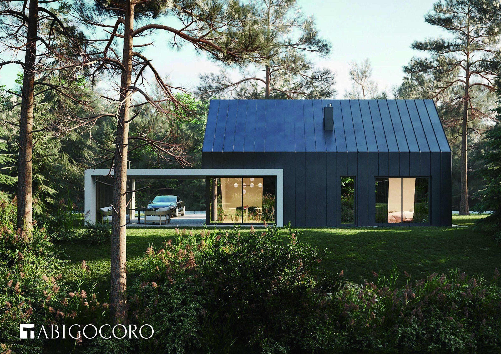
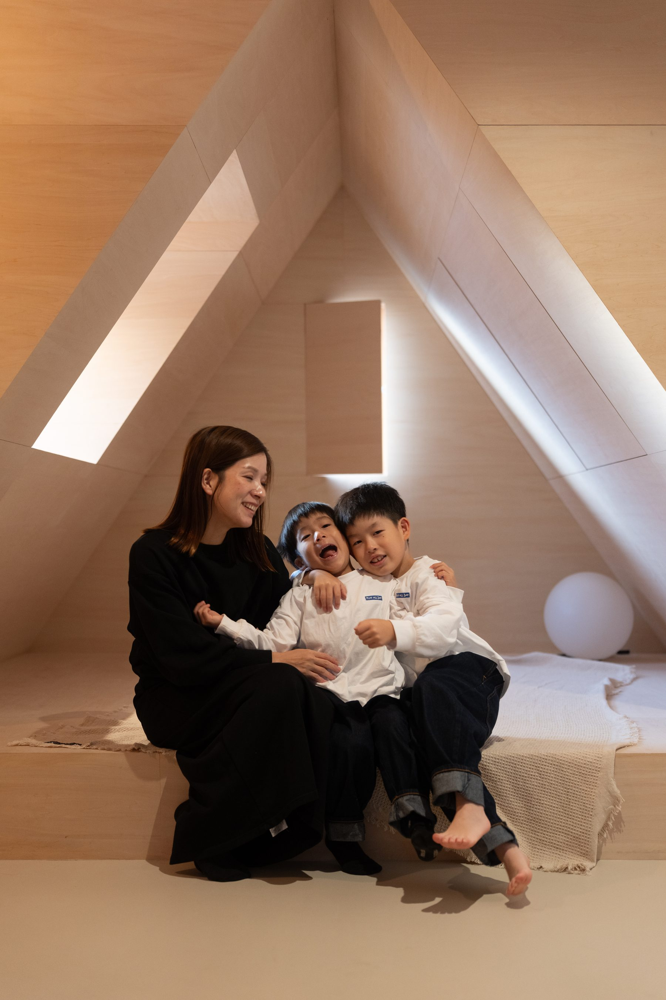
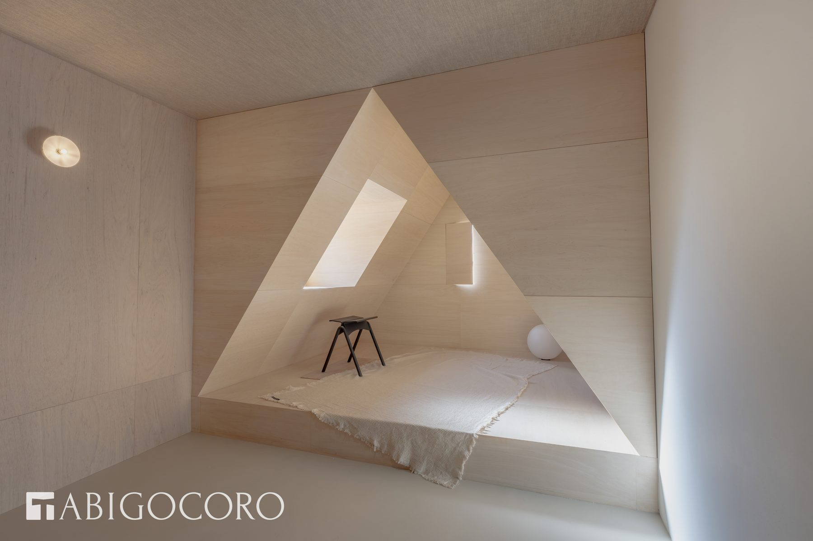
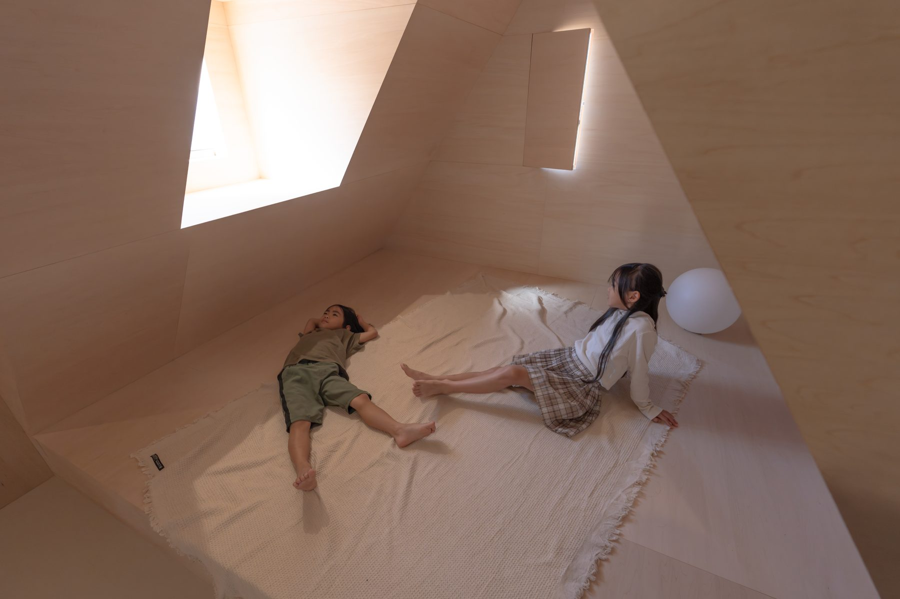
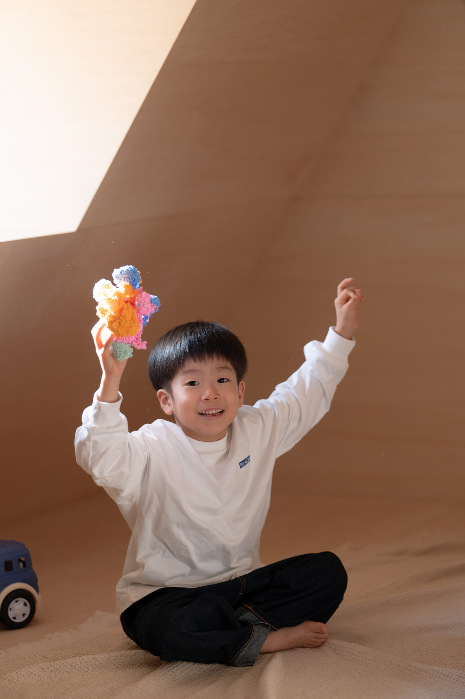
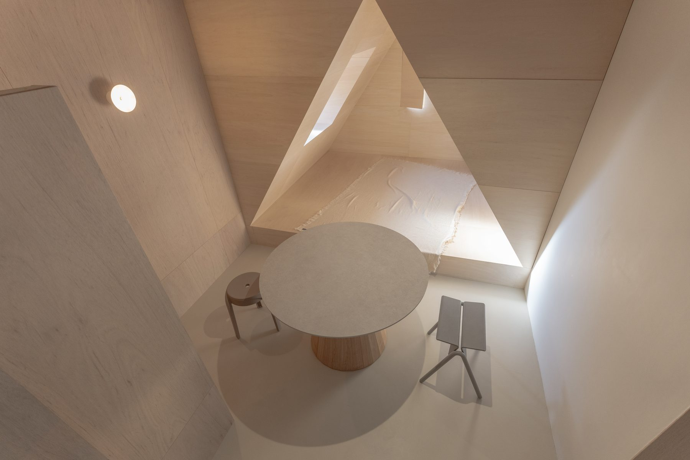
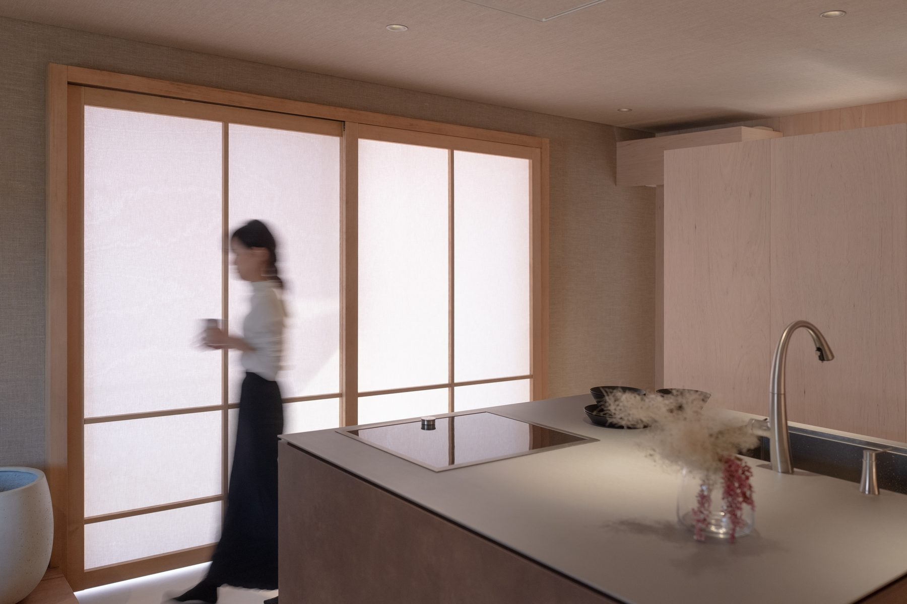
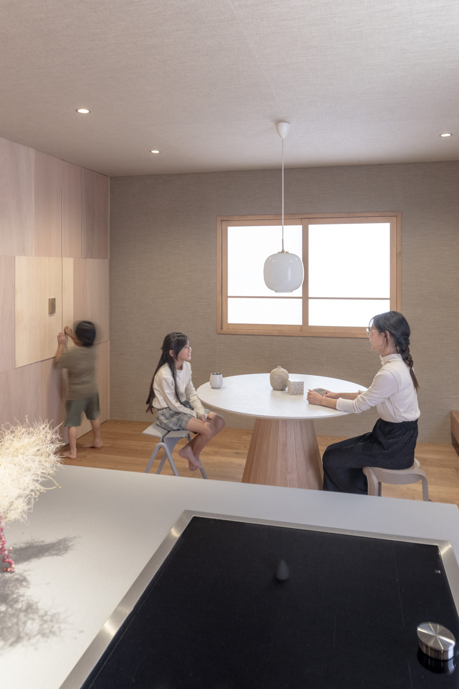
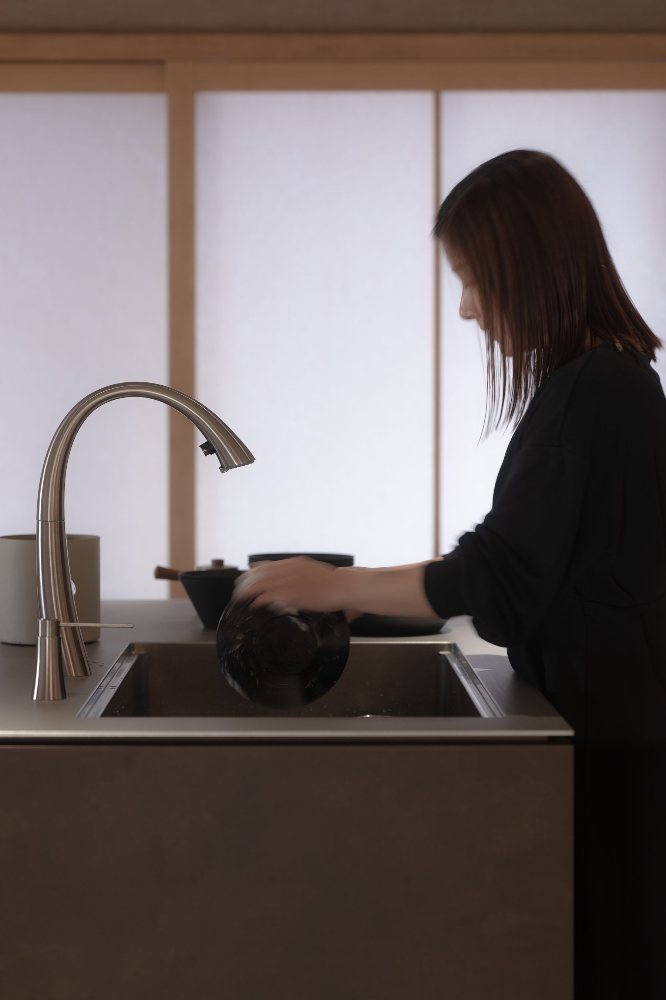

TANICA ARCHITECTURE ORIGINAL BRAND

「ただいま」という旅は、 家族の心をつなぐ。
旅先のホテルや旅館で感じる、心躍る感動と心地よさ。
その体験を、日常の住まいの中にデザインする自社ブランドです。
あなたは、一生の旅に出る。
コンセプトCONCEPT

細部にこだわり抜いた、心躍る住まいへ。
「TABIGOCORO（タビゴコロ）」は、株式会社タニカ建築が手がける自社ブランドです。 旅先で泊まったホテルや旅館で感じる、あの高揚感や心地よさ——。 その感動を、毎日帰ってくる「わが家」の中にデザインします。
三角の勾配天井がつくる特別な居場所、無垢材や左官の質感を活かした素材づかい、 光と影を計算した窓の配置。細部までこだわり抜いた設計で、 家族の「ただいま」がいつも心躍る瞬間になるような住まいをご提案します。
実例MODEL ROOM
TABIGOCORO モデルルーム — 石井邸

三角の勾配天井が生む、特別な居場所
光の入る三角の窓と、まるでテントのような包まれ感のある空間。
家族が自然と寄り添う場所
やわらかな木の質感に包まれた、心が緩む時間。

光をデザインする、窓のかたち
時間帯によって表情を変える、計算された採光。

子どもの遊び場にもなる、包まれる空間
秘密基地のような、家族だけの特等席。

円卓を囲む、家族の食卓
造作の家具と一体になった、集う場としてのダイニング。

やわらかな光と、暮らしの気配
障子を通した光が、キッチンにやさしい陰影をつくる。

毎日の食卓が、旅先の一室のように
照明とテーブルの佇まいで生まれる、非日常の心地よさ。

細部にこだわる、水まわりの佇まい
素材と陰影にこだわり抜いた、造作の水栓まわり。
デザインの軸DESIGN
三角の勾配天井
テントのように包まれる、家族だけの特別な居場所。光の入り方まで丁寧に設計します。
素材とディテール
無垢材、左官、造作家具——手に触れる部分まで質感にこだわり、経年で味わいが増す住まいに。
光と陰影の設計
窓の配置と照明計画で、朝・昼・夜それぞれに違う表情を見せる空間をつくります。